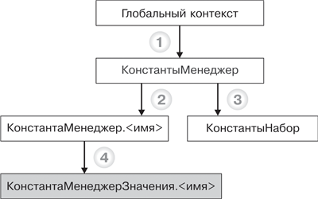

1.2.3.1. КонстантыОбъекты встроенного языка для работы с константами
На следующей схеме изображено взаимодействие объектов встроенного языка для работы с константами (рис. 29.1).

Рис. 29.1. Объекты встроенного языка для работы с константами
ПРИМЕЧАНИЕ
Заливкой выделен объект манипулирования данными. Метод объекта, от которого идет стрелка, приводится в листинге под соответствующей цифрой, а объект, к которому идет стрелка, – это тип объекта, возвращаемого методом.
Узнай больше!
Про основные виды объектов встроенного языка можно прочитать в главе «Объекты встроенного языка для работы с прикладными данными».
КонстантыНабор – предоставляет возможность проведения операций чтения и записи сразу для группы констант, в частном случае – для всех констант. Также используется в форме констант для хранения, записи и считывания констант.
КонстантаМенеджерЗначения.<имя> – используется для доступа к константе. Любая запись константы (интерактивно в форме, объекты КонстантыНабор и КонстантаМенеджер.<имя>) создает объект этого типа и производит запись с его помощью, что обеспечивает вызов модуля и обработчиков событий этого объекта.
Ниже приведены примеры использования объектов встроенного языка для работы с константами (листинг 29.4).
Листинг 29.4. Примеры использования объектов
|